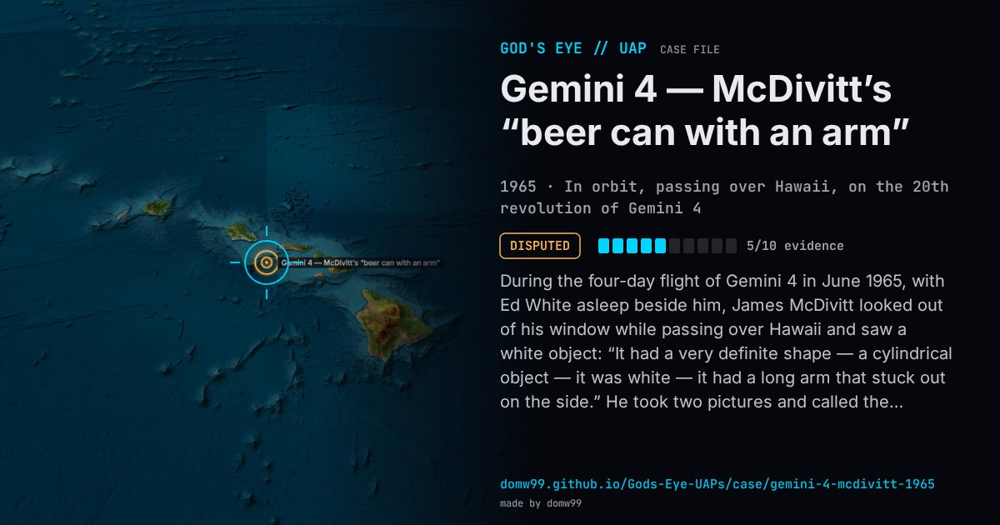

Gemini 4 — McDivitt’s “beer can with an arm”

During the four-day flight of Gemini 4 in June 1965, with Ed White asleep beside him, James McDivitt looked out of his window while passing over Hawaii and saw a white object: “It had a very definite shape — a cylindrical object — it was white — it had a long arm that stuck out on the side.” He took two pictures and called the ground. Asked how far away it was, he guessed “ten miles or so” and added that this was only a guess, since he could not tell whether it was small and near or large and far; Mission Control said the nearest tracked object was the Pegasus satellite, about 1,200 miles away. The capsule was drifting and the window glass was dirty. He never found the frames he believed showed the object, and the picture later released as his “UFO” was one he identified as a window reflection.
Explanation
The likeliest explanation is a piece of the mission’s own hardware, above all the Titan II second stage that had been flying near the capsule since launch, which a NORAD officer named to Philip Klass. McDivitt accepted that one of his photographs showed the Titan stage, but always said it was not the object he had described; he called it an unknown man-made object, not an alien craft. NASA’s published picture is a different frame, which McDivitt said showed only a reflection on the window. The Condon Report listed it among three astronaut sightings it could not adequately explain.
What was seen
Shape: A white cylinder, about three times as long as it was wide, with a long arm sticking out of one side
Witnesses: Major James McDivitt, U.S. Air Force, the command pilot; Ed White was asleep
Duration: Under a minute
Sources
- Wikipedia — UFO sightings in outer space
- Patrick Gross — McDivitt, Gemini IV, June 1965 (with the air-to-ground exchange)
Browse
- United States
- 1960s
- Disputed
- Photo and video cases
- Military witnesses
- Pilot and aircrew witnesses
- Photographs
- Audio recordings or radio transcripts
- Cylinders and cigar shapes